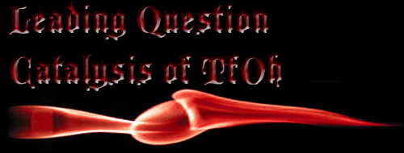
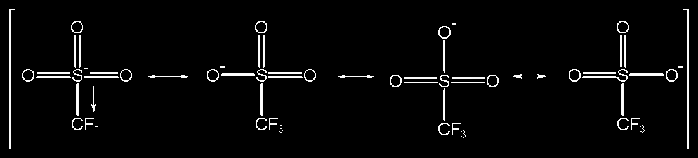
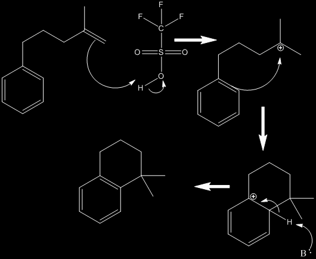

TfOH or triflic acid (trifluoromethanesulfonic acid), is often used in organic synthesis as an acid catalyst. Having a pKa of about -15 it is considered a superacid and is among the strongest of acids. Its extreme acidity can be derived from the extreme amount of resonance between the sulfur and three oxygen atoms coupled with the extremely electron-withdrawing qualities of the fluorocarbon group. Triflic acid is also very effective because its conjugate base does not act as a nucleophile. Triflic acid is used in cyclization reactions either by protonating a multiple bond. This creates a carbocation which then reacts with a pi system similar to a Friedel-Crafts reaction. The subsequent product is then deprotonated, usually to re-establish an aromatic system. Below is an example reaction showing this concept. 
Here is a sample reaction:
